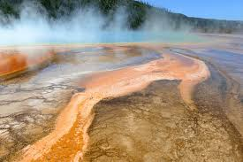
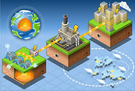

¿Qué es? La energía geotérmica es un tipo de energía renovable, de origen volcánico, es decir, que consiste en aprovechar el calor interno de la Tierra para extraer del subsuelo aguas a elevadas temperaturas, de la cual puede extraerse la energía calórica o que puede emplearse para generar electricidad.
La energía térmica que alberga la naturaleza es conocida desde la antigüedad, cuando las temidas erupciones volcánicas amenazaban la supervivencia de cultivos y poblaciones. Sin embargo, la capacidad de aprovechar ese calor del interior de la tierra y transformarlo en energía geotérmica comenzó en el siglo XIX.
Esta energía térmica está contenida en la roca y los fluidos que se hallan bajo la corteza terrestre. Se puede encontrar tanto en el suelo poco profundo como en varios kilómetros por debajo de la superficie, e incluso más abajo hasta la roca fundida extremadamente caliente llamada magma.
"La Energía geotérmica, es la gran desconocida entre el grupo de las Energías Renovables, por lo que muchas veces es ignorada, aunque ya existía y se conocía desde la antigüedad", señalaba un informe del Ministerio de Energía de España en 2014.
Usos
Generación de electricidad y calefacción.
Ventajas:
- Constante
- Proporciona una fuente de energía estable y predecible.
- Bajo impacto ambiental
- Tiene una huella de carbono muy baja.
- Eficiente
- Alta eficiencia energética en comparación con otras fuentes renovables.
¿Cómo ayuda al planeta?:
- Reducción de gases de efecto invernadero: Emite mínimas cantidades de CO2.
- Uso sostenible: Aprovecha el calor natural de la Tierra sin agotarlo.